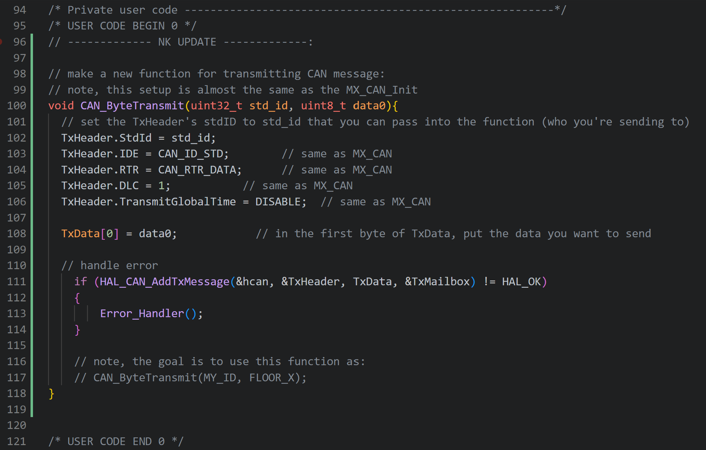

3D printed a few more parts designed by Matveys
- gantry attachments and more chain links
Finished the provided STM32 HAL coding example
- went through the entire doc and configured the STM32 based off of Michael's instructions.
- configured the three external buttons and LEDs that are located on the STM shield as well.
Began writing new code for transmitting CAN messages
- started to develop the code for the CC transmit on the STM32
- most of the handling logic seems to be handled by the EC so programming the STMs (CC and F1-3) seems quite simple, can be done next week for sure
- see the changes in the attach images below:
